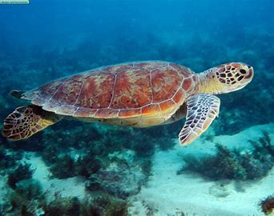

Tortuga de río

NOMBRE Y CIENTIFICO :Tortuga de río (Trachemys scripta)
Hábitat: Las tortugas de río, también conocidas como tortugas de agua dulce, se encuentran principalmente en ríos, lagos, estanques y arroyos de América del Norte y América Central. Prefieren cuerpos de agua tranquilos con vegetación y zonas rocosas donde puedan descansar y tomar el sol.
Estilo de vida: Son reptiles acuáticos y semiacuáticos. Se alimentan tanto en el agua como fuera de ella, y pasan parte de su tiempo bajo el agua buscando alimentos y otra parte en la orilla o en rocas para tomar el sol y regular su temperatura.
Características:
- Caparazón plano: Su caparazón es relativamente plano y alargado, lo que les permite moverse con facilidad en el agua. Generalmente, tiene colores y patrones muy variados, con tonos verdes, marrones o amarillos.
- Alimentación variada: Son omnívoras y tienen una dieta variada que incluye plantas acuáticas, pequeños peces, insectos, caracoles, y otras criaturas acuáticas.
- Hábitos de tomar el sol: Pasan muchas horas tomando el sol en rocas o troncos fuera del agua. Este comportamiento les ayuda a regular su temperatura corporal, ya que son reptiles de sangre fría
- Buena natación: Son nadadoras excelentes, con patas traseras adaptadas para el nado. Tienen membranas entre los dedos de sus patas que les permiten moverse con facilidad en el agua.
Reproducción en tierra: Aunque son animales acuáticos, las tortugas de río ponen sus huevos en la tierra. Las hembras se alejan del agua para cavar un nido donde depositarán sus huevos.
La tortuga de río es un reptil adaptado a un estilo de vida tanto acuático como terrestre, disfrutando de una dieta variada y la capacidad de moverse con agilidad en su hábitat natural.
regresar al menu